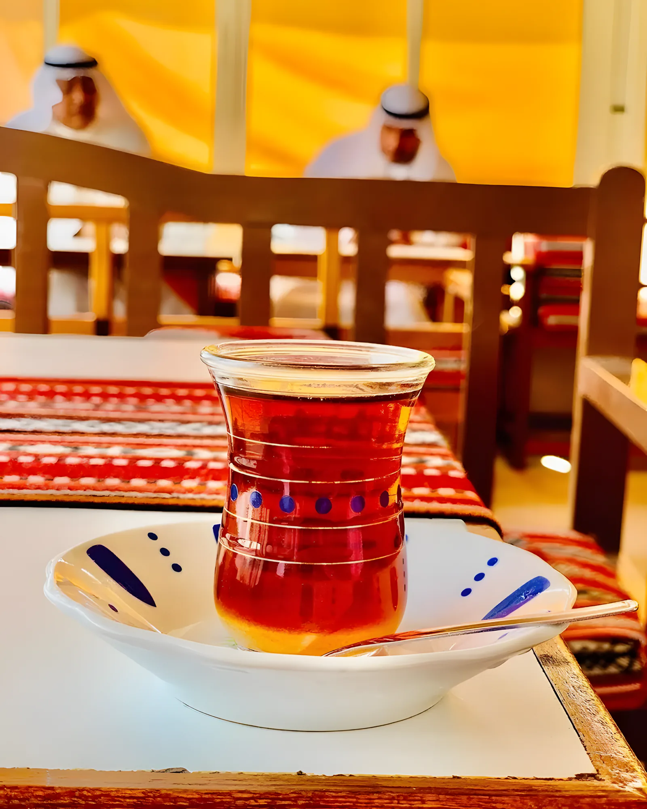
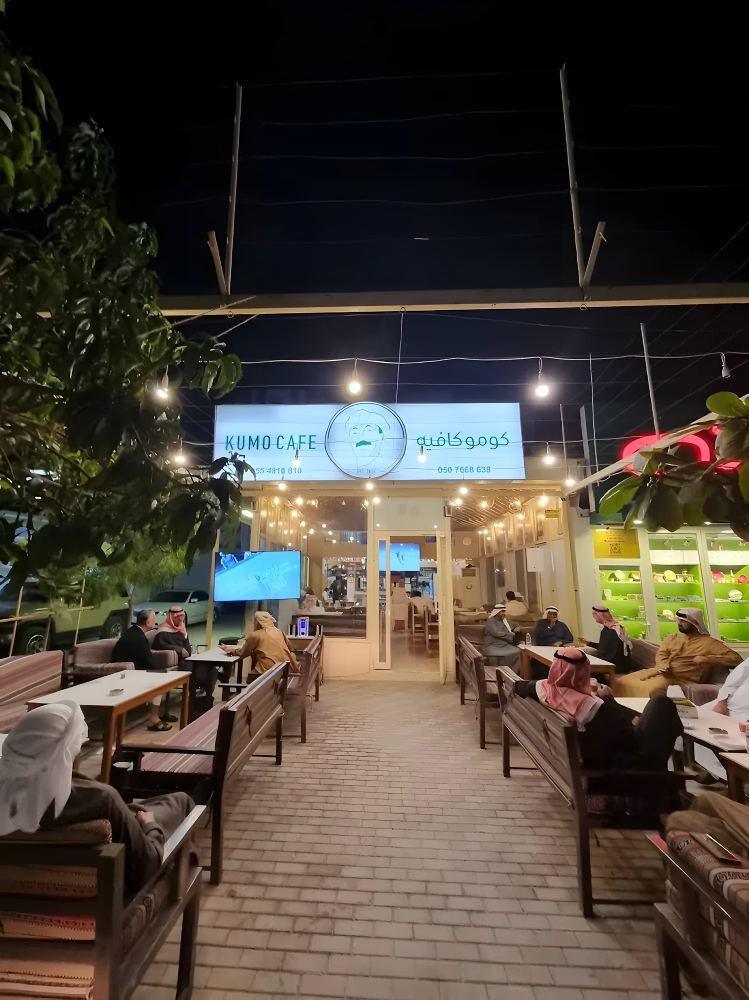
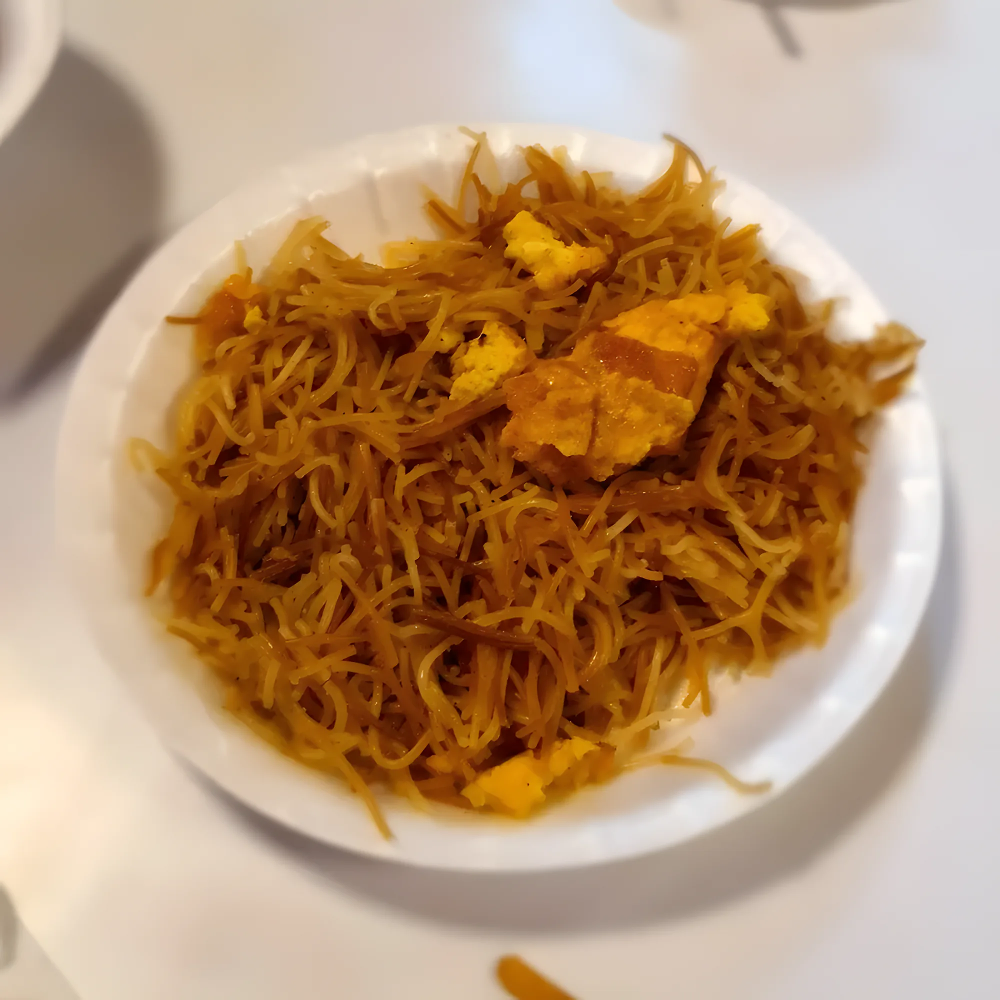
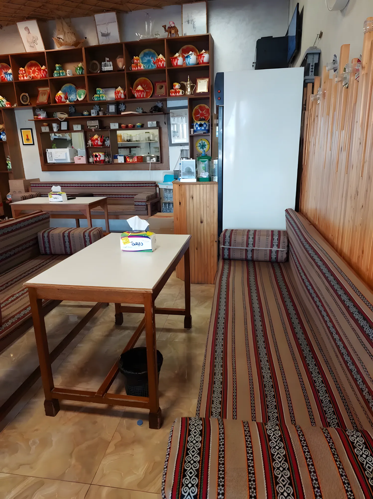
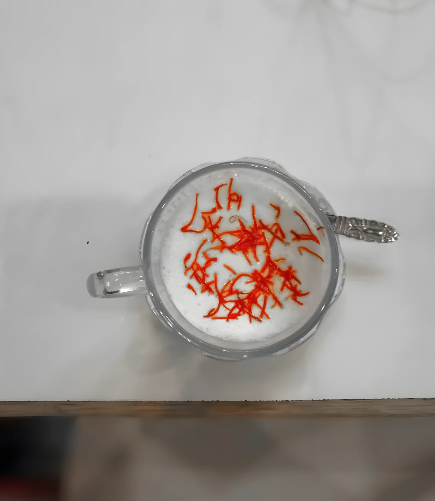
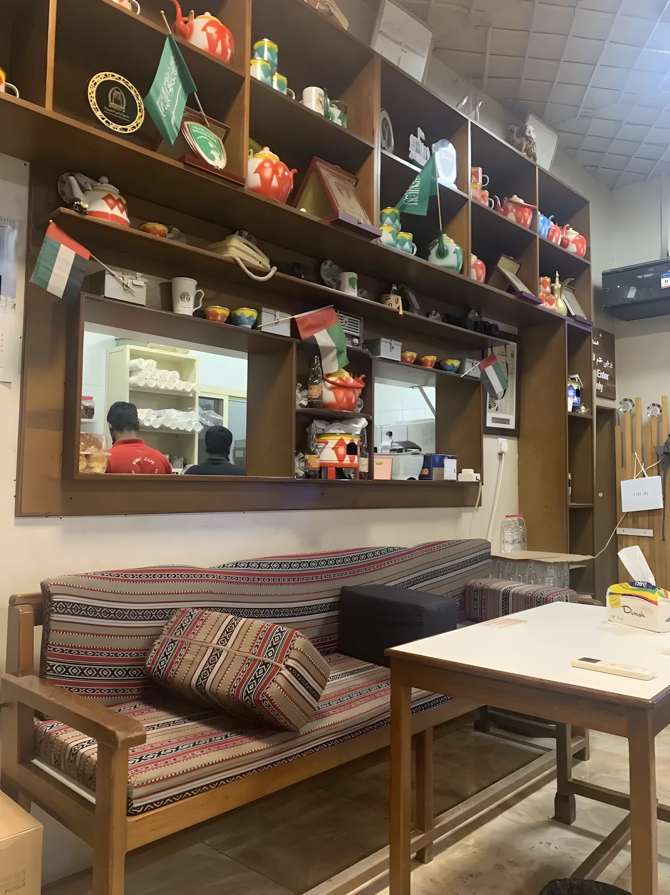
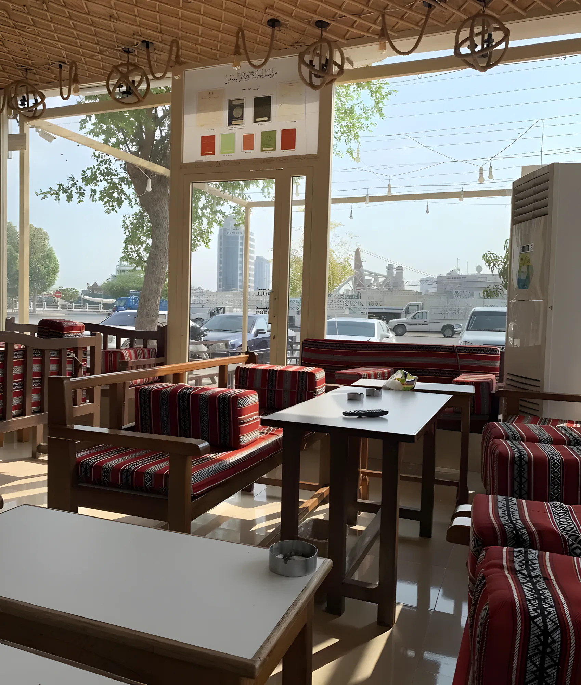
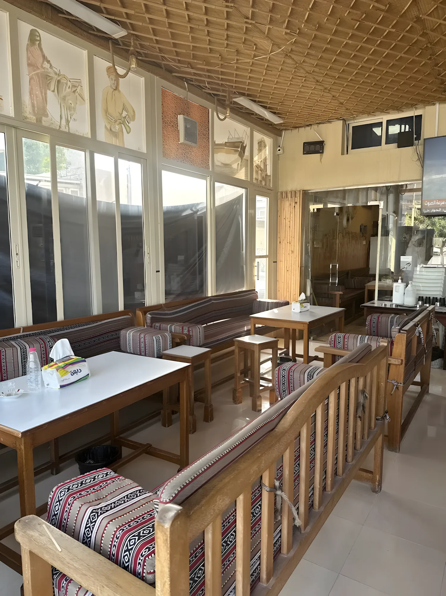
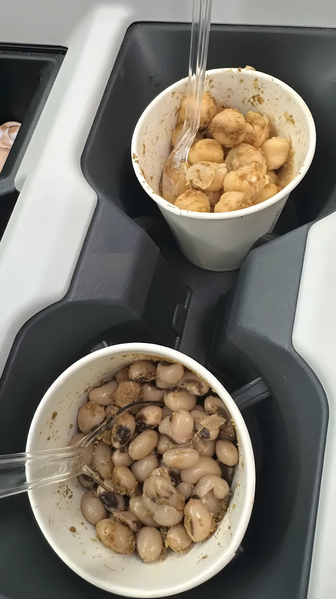
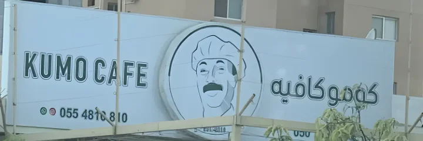

طعم الشاي الأصلي
Kumo Cafe · The taste of the real tea
كومو كافيه في رأس الخيمة القديمة. شاي وكرك على الفحم، حليب طازج بالزعفران أو بالزعتر، والأكلات الشعبية اللي تربّينا عليها: بلاليط وخبيص وهريس ولقيمات. اقعد على جلسة السدو، أو خذ طلبك بارسل.
كل يوم من 6 الصبح لين 12 الليل






استكانة شاي على طاولة السدو01 / 05
شاي على الفحم
Tea on charcoal
1 درهم · بارسل 1.50
شاي على الفحم
Karak on charcoal
حليب بالزعفران
Balaleet
خبيص
Luqaimat
حليب بالزعتر
Harees
من منيو كومو


معكرونة ولا مضروبة؟
المعكرونة يوم الأحد والأربعاء، والمضروبة يوم الاثنين والخميس. باقي المنيو ما له يوم محدد، فباقي الأيام اسألنا شو الطبخة.
- السبتما في طبخة محددةاسأل على الواتساب
- الأحدمعكرونة
- الاثنينمضروبة
- الثلاثاءما في طبخة محددةاسأل على الواتساب
- الأربعاءمعكرونة
- الخميسمضروبة
- الجمعةما في طبخة محددةاسأل على الواتساب
اقعد داخل، أو برّا
كراسي خشب بمساند سدو داخل، وجلسة برّا تحت الأنوار، ورفوف أباريق واستكانات ورا الكاونتر.




4.5
على قوقل، من 211 تقييم.
التقييم مثل ما يظهر في صفحة كومو كافيه، أكتوبر 2026.وين تلقانا
كومو كافيه، رأس الخيمة القديمة
رمز الموقع QWWX+CW2.

كل يوم، من 6 الصبح لين 12 الليل مفتوح الحين